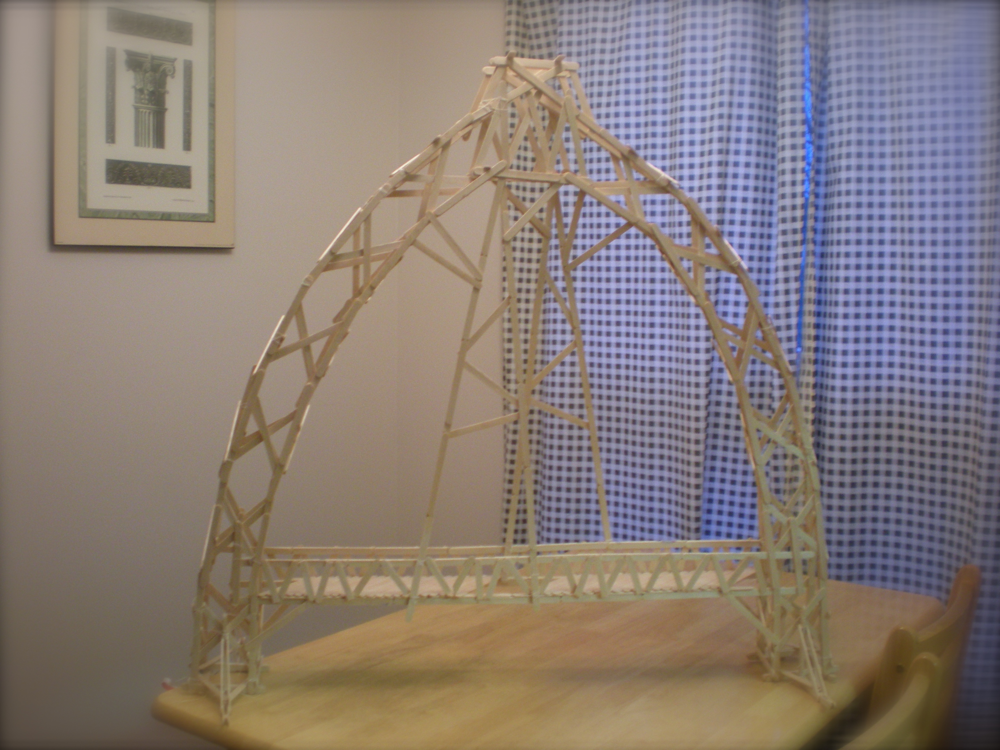
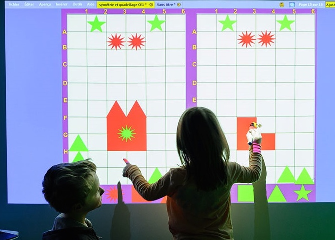

Co-op. From Finance to Tech.

The Co-op program at the University of Waterloo provided me the opportunity to experience different industries and discover what I'm passionate about. My previous terms include working as a business analyst at TD Securities and a financial analyst at DBRS, which provided valuable insights into rating agencies and fundamental financial institutions. I'm currently on the Dynamics team at Microsoft focusing on our CRM and ERP products.
Business Development Manager Intern
- Analyzed trends from different Dynamics activities and evaluated the success of tactics
Business Analyst
- TD Securities Act for Impact Award for contribution to Calypso Derivative upgrade through Systems Development Life Cycle (SIT & UAT)
Projects and Certificates

Bloomberg University Certificates:
- Equity Essentials
- Fixed Income
- Commodities
- FX

Western University Physics Bridge Building Contest
- Received first place for designing and building the most asthetic bridge
- Gothic style bridge held over 65kg of weight
Other Experiences


